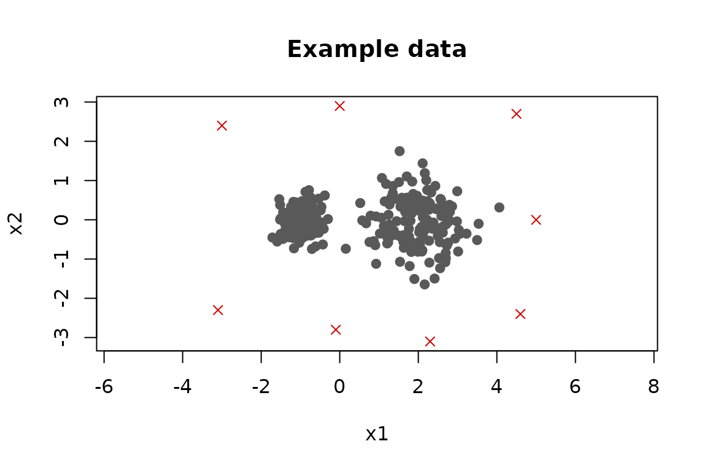
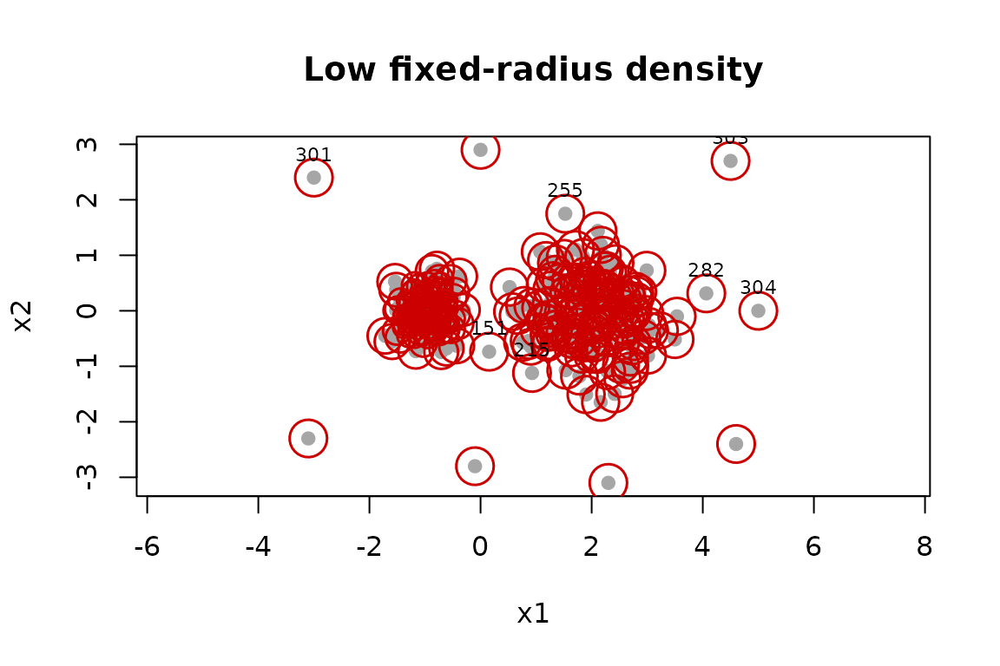
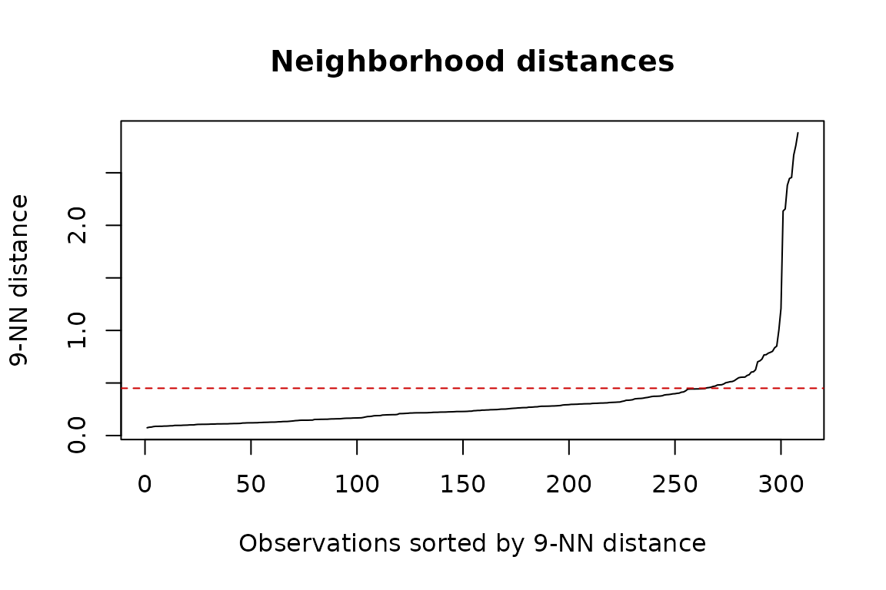
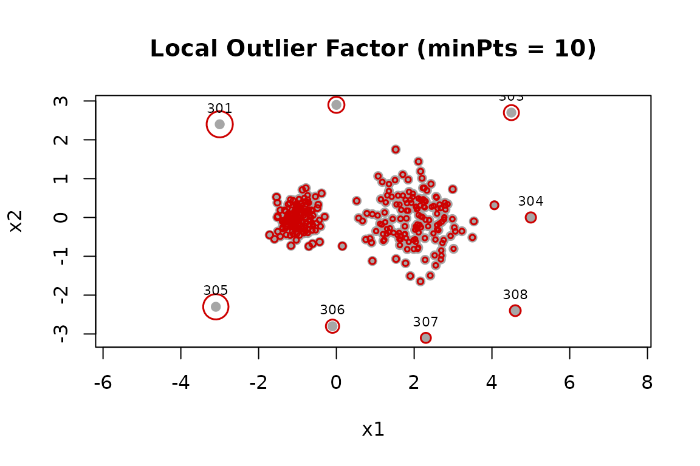
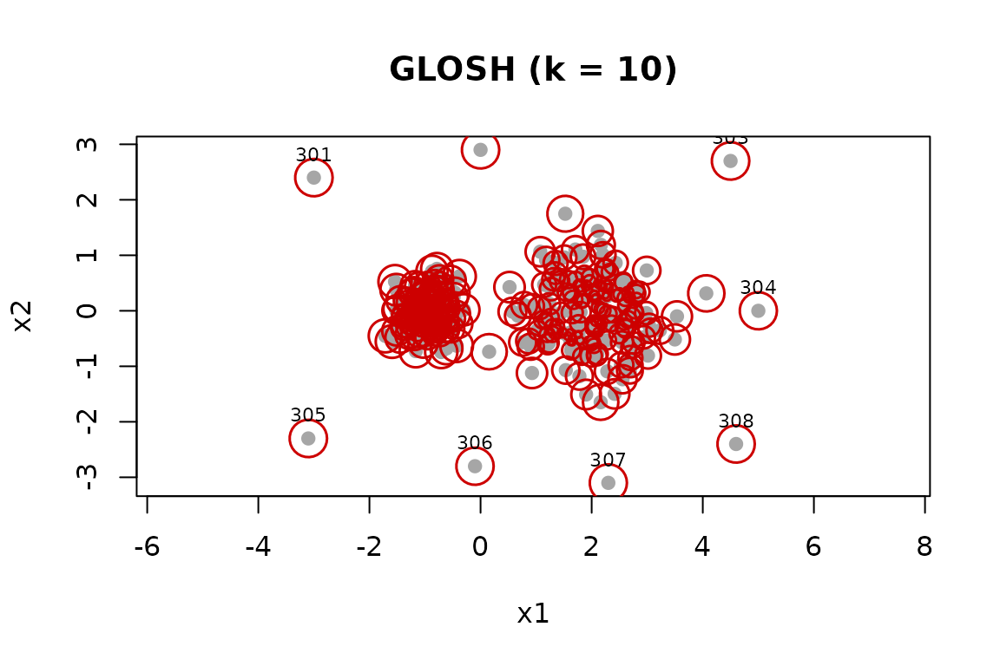
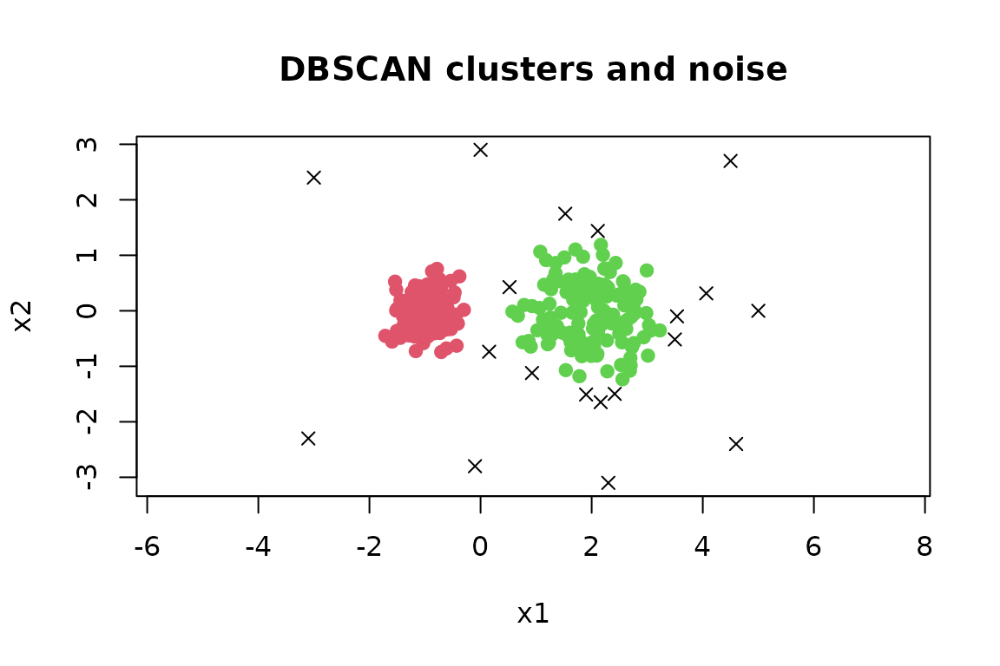

The dbscan package provides several related approaches to unsupervised outlier detection:
-
pointdensity()finds observations in low-density regions; -
lof()compares the density around an observation with the densities around its neighbors; and -
glosh()uses a density hierarchy to find both local and global outliers. The same GLOSH scores are returned byhdbscan().
These functions return an outlier score for every observation, not a final yes/no decision. This distinction is useful because the number and cost of false alarms depend on the application. Scores can be ranked for inspection or combined with a threshold chosen using domain knowledge or labeled validation data.
Example data
We create two groups with different densities and add eight unusual points. The labels are retained only so that the behavior of the methods can be illustrated; outlier labels are normally not available.
set.seed(4)
regular <- rbind(
cbind(rnorm(150, -1, 0.30), rnorm(150, 0, 0.30)),
cbind(rnorm(150, 2, 0.65), rnorm(150, 0, 0.65))
)
outliers <- rbind(
c(-3.0, 2.4), c( 0.0, 2.9), c(4.5, 2.7), c(5.0, 0.0),
c(-3.1, -2.3), c(-0.1, -2.8), c(2.3, -3.1), c(4.6, -2.4)
)
x <- rbind(regular, outliers)
known_outlier <- seq_len(nrow(x)) > nrow(regular)
plot(
x,
pch = ifelse(known_outlier, 4, 19),
col = ifelse(known_outlier, "red3", "grey35"),
asp = 1,
xlab = "x1", ylab = "x2",
main = "Example data"
)
All methods in this vignette are distance based. Variables should
therefore be on comparable scales. For measurements in different units,
a common starting point is scale(x), provided that giving
the variables equal variance makes sense for the application. Missing
and non-finite values need to be handled before calculating scores.
The following helper displays a score by mapping larger values to larger circles. It also labels the observations with the eight largest scores.
plot_scores <- function(x, score, main, n = 8) {
size <- 0.5 + 2.5 * (score - min(score)) / diff(range(score))
top <- order(score, decreasing = TRUE)[seq_len(n)]
plot(x, pch = 19, col = "grey65", asp = 1, main = main,
xlab = "x1", ylab = "x2")
points(x, pch = 1, col = "red3", cex = size, lwd = 1.5)
text(x[top, , drop = FALSE], labels = top, pos = 3, cex = 0.7)
invisible(top)
}Low point density
pointdensity() counts observations inside a fixed-radius
neighborhood. The count includes the query point itself, so its minimum
is one. Small counts indicate isolated observations.
frequency <- pointdensity(x, eps = 0.45, type = "frequency")
summary(frequency)
#> Min. 1st Qu. Median Mean 3rd Qu. Max.
#> 1.00 17.00 29.00 42.22 72.25 109.00
# Reverse the sign so that larger values consistently mean more unusual.
density_score <- -frequency
plot_scores(x, density_score, "Low fixed-radius density")
The radius eps defines the scale of the analysis. A
small radius marks more points as isolated, while a large radius can
hide small-scale anomalies. The sorted distances to the nearest
neighbors provide a useful diagnostic for the range of plausible
radii.
d9 <- sort(kNNdist(x, k = 9))
plot(
d9,
type = "l",
xlab = "Observations sorted by 9-NN distance",
ylab = "9-NN distance",
main = "Neighborhood distances"
)
abline(h = 0.45, col = "red3", lty = 2)
A single fixed radius describes a global density level. Consequently, valid observations from a sparse group can receive lower counts than observations from a dense group. This is where a local score such as LOF can be preferable.
The type argument can also return a uniform-kernel
density estimate with type = "density" or a Gaussian-kernel
estimate with type = "gaussian". For ranking observations,
the frequency and uniform-density results give the same ordering when
calculated with the same eps.
Local Outlier Factor (LOF)
LOF compares the local reachability density of an observation with those of its nearest neighbors. Values near 1 mean that an observation has density similar to its neighbors. Values substantially larger than 1 indicate a lower local density and stronger evidence of an outlier.
lof_score <- lof(x, minPts = 10)
summary(lof_score)
#> Min. 1st Qu. Median Mean 3rd Qu. Max.
#> 0.9491 0.9970 1.0465 1.2540 1.1756 10.4059
plot_scores(x, lof_score, "Local Outlier Factor (minPts = 10)")
minPts includes the observation itself and controls the
neighborhood size. Smaller values emphasize very local deviations and
may produce variable scores. Larger values smooth over a wider
neighborhood and may miss anomalies inside small groups. It is good
practice to compare the highest-ranked observations over several
substantively reasonable values.
minpts <- c(5, 10, 20, 40)
lof_scores <- sapply(minpts, function(m) lof(x, minPts = m))
colnames(lof_scores) <- paste0("minPts_", minpts)
# How many of the top 12 from minPts = 10 remain in each top-12 list?
reference <- order(lof_scores[, "minPts_10"], decreasing = TRUE)[1:12]
data.frame(
minPts = minpts,
overlap = apply(lof_scores, 2, function(s)
length(intersect(reference, order(s, decreasing = TRUE)[1:12])))
)
#> minPts overlap
#> minPts_5 5 9
#> minPts_10 10 12
#> minPts_20 20 12
#> minPts_40 40 12There is no universal LOF cutoff. A threshold such as 1.5 or 2 is
sometimes used as a screening rule, but its meaning changes with the
data and minPts. Ranking scores, inspecting their
distribution, and validating decisions is safer than treating a
conventional value as a calibrated probability.
GLOSH and HDBSCAN
GLOSH (Global-Local Outlier Score from Hierarchies) uses a hierarchy of density levels rather than one fixed neighborhood comparison. Scores close to 1 indicate stronger outlier evidence, while scores close to 0 indicate points that persist in a dense part of the hierarchy.
glosh_score <- glosh(x, k = 10)
summary(glosh_score)
#> Min. 1st Qu. Median Mean 3rd Qu. Max.
#> 0.0000 0.2612 0.4083 0.4184 0.5847 0.9726
plot_scores(x, glosh_score, "GLOSH (k = 10)")
HDBSCAN calculates the same scores as part of fitting the clustering. Reuse these values when both a clustering and outlier scores are needed.
hdb <- hdbscan(x, minPts = 10)
all.equal(hdb$outlier_scores, glosh_score)
#> [1] TRUE
head(data.frame(
cluster = hdb$cluster,
membership = hdb$membership_prob,
outlier_score = hdb$outlier_scores
))
#> cluster membership outlier_score
#> 1 2 0.8430107 0.39693485
#> 2 2 0.8624192 0.31186018
#> 3 2 0.7490174 0.62278335
#> 4 2 0.7883606 0.55265994
#> 5 2 0.7634386 0.59978763
#> 6 2 0.8786444 0.03121142Membership probability and outlier score answer different questions. The former describes the strength of membership in the selected flat HDBSCAN clusters; the latter is calculated from the density hierarchy. They need not be exact complements.
glosh() can also score an existing hclust
object. This permits other hierarchies to be explored, although the
resulting scores depend on the linkage used to construct that
hierarchy.
Turning scores into candidates
When the expected number of anomalies is known, the highest-ranked observations provide a simple candidate set. Here, choosing eight is justified only because the simulation contains eight planted outliers.
top_n <- function(score, n)
order(score, decreasing = TRUE)[seq_len(n)]
candidates <- data.frame(
pointdensity = top_n(density_score, 8),
LOF = top_n(lof_score, 8),
GLOSH = top_n(glosh_score, 8)
)
candidates
#> pointdensity LOF GLOSH
#> 1 151 301 303
#> 2 215 305 301
#> 3 255 302 305
#> 4 282 303 308
#> 5 301 306 302
#> 6 302 308 306
#> 7 303 304 307
#> 8 304 307 304
# Evaluation is possible because this simulated example has labels.
sapply(candidates, function(i) sum(known_outlier[i]))
#> pointdensity LOF GLOSH
#> 4 8 8For real data, useful alternatives include reviewing a manageable upper tail, choosing a threshold from labeled validation data, or selecting a cutoff based on the cost of investigation and false alarms. Quantiles specify how many observations to flag, but do not establish that those observations truly are outliers.
DBSCAN noise is not an outlier score
DBSCAN assigns cluster label 0 to observations that are
not density-reachable from a core point. These noise points are
sometimes useful outlier candidates, but the label is a consequence of
the chosen eps and minPts and provides no
ranking.
db <- dbscan(x, eps = 0.45, minPts = 10)
table(noise = db$cluster == 0, known_outlier)
#> known_outlier
#> noise FALSE TRUE
#> FALSE 289 0
#> TRUE 11 8
plot(
x,
col = db$cluster + 1L,
pch = ifelse(db$cluster == 0, 4, 19),
asp = 1,
xlab = "x1", ylab = "x2",
main = "DBSCAN clusters and noise"
)
A noise point may simply belong to a legitimate sparse group, and an unusual point near a cluster can be assigned as a border point. Use DBSCAN noise when that density-based definition matches the application; use LOF or GLOSH when a ranked measure of unusualness is needed.
Practical workflow
- Select relevant numeric features and scale them when appropriate.
- Decide whether unusualness should be global, local, or hierarchical.
- Calculate scores over plausible neighborhood sizes.
- Inspect score distributions, spatial plots or profiles of top-ranked rows, and the stability of the ranking.
- Choose an operational cutoff using domain costs or labeled validation data.
- Refit and revalidate as the data distribution changes.
Nearest-neighbor methods become less discriminating in very high dimensions. Feature selection or a domain-appropriate dimension reduction can help, but the complete preprocessing and scoring procedure should be validated together to avoid interpreting artifacts as anomalies.
References
Breunig, M. M., Kriegel, H.-P., Ng, R. T., and Sander, J. (2000). LOF: Identifying density-based local outliers. Proceedings of the 2000 ACM SIGMOD International Conference on Management of Data, 93–104. doi: 10.1145/335191.335388.
Campello, R. J. G. B., Moulavi, D., Zimek, A., and Sander, J. (2015). Hierarchical density estimates for data clustering, visualization, and outlier detection. ACM Transactions on Knowledge Discovery from Data, 10(1), 1–51. doi: 10.1145/2733381.